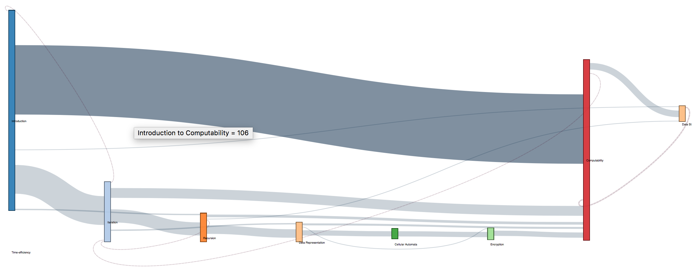

Data Analysis
Sankey Diagrams
How to Use:
The nodes in the diagram represent the different modules of the course. The links represent the number of students
that move from one module to another. The solid links show forward movement and the dashed links represent when
students go back to a module after completing it the first time. The size of the nodes and links represent the
number of students who take that path.
You can interact with the nodes and move them around to see links more clearly. Hovering over links will reveal
their counts in tooltips and hovering over nodes will highlight all source links to that node. Clicking on a node
will allow you to highlight all target links that go out from that node. Link highlights can be reset by clicking
any node.
D3.js Sankey Diagram to visualize flow of students
through Summer 2016 course at a macro level:
click image to view full diagram
Insights:
Following the general pattern, there is clear group of students who follow the recommended path as shown by the
thick link. At the top left of the graph it is also easy to see a number of advanced students who skip the
introduction lessons on loops and lists. Nodes which are small and pushed to the side like concurrency, common
errors and logic are also key aareas for intervention as not enough students are attempting these modules.
Another interesting insight from this visualization is the idea that making decisions is linked to different
previous modules and being a complicated module results in students going back to other modules to recap as shown
by the large number of backwards links. The recommended intervention in this case would be to examine the
contents of the making decisions module to decided if it requires more scaffolding or whether recap notes from
other modules should be directly inserted into this.
We recreated the Sankey diagram for 2 other terms of the same course to verify how they have evolved.
D3.js Sankey Diagram to visualize flow of students
through Spring 2016 course at a macro level:

click image to view full diagram
Insights:
In this version of the Sankey flow, we can see that there are far fewer modules and transactions in the Spring as
compared to summer. However, we can see two clear splits in the paths and can see that there are mny back links
into Iteration, meaning it probably need to be improved to promote far learning.
Student attrition is also very clearly visible in this Sankey.
D3.js Sankey Diagram to visualize flow of students
through Fall 2016 course at a macro level:
click image to view full diagram
Insights:
The fall course size was much larger than the other two terms (more than 4 times the number of students), hence
the abundance of links. Once again we immediately see the large link of students returning to the making
decisions module, hoghlighting that it is an area for improvement, even across terms.
Like we saw in the
summer, there is one clear path most students follow, an early group that skips introduction slides and
atttrition is clear.
What is also obeserved is that many students skipped the post test and also the mid modules like Recursion, Data
Representation and Encryption which show as very small nodes.
As before, instructional designers should consider Scaffolding the course so that novice learners and advanced
learners can both take advatage of the online class.
Individual Student Pathways
Tableau visualization for each student's path at a
micro level.
How to Use:
X axis: Week of problem start time
Y axis: Student ID and total score
Size: Problem view (longer the bar is, the more time they view)
Color: Different color means different problem hierarchy.
Interactivity: You can mouse over the graphic to see its details.
Questions addressed by this visualization:
- Do high achieving students take similar pathways?
- Are there common pathways between all students?
- What are some features of students learning pathways?
Evaluation:
Since our data is relatively complex, that has different dimensions, this graphics is still not self-
explanatory.
But with a little bit of explanation, it should be much more interpretable than a bunch of numbers.
Insights:
1) Low achieving students started struggling very early, on their first course module- For loops. (The third
block on the graph, because the first two block are introduction and pretest). We can see from the brown block
that showed for low achieving students, these are much longer, which means they have been visiting that for
loops module a lot of times. This early struggling shows they are struggling, and may indicate that they may
not do as well as others. So educators can take this as a sign, and give timely help to these struggling
students who are using more time than others.
2) High achieving students (judging from the total- final performance), tend to do more modules. As we can see
from the visual, in the upper part, there are more colorful blocks, which means these students visited modules
more completely. We can also see that the time they take are more balanced. While if you look at the
low-achieving students, you can see that there are more white space in their pathways, which means they have
missed a lot of modules. This can lead to drop in their final performance. Also, as you can see from the
graphics, the time use of low-achieving students are not as balanced as high-achieving ones. There tend to be
some really long blocks, which could possibly mean that they are struggling.
3) However, there are also some anomaly, such as the one low-achieving student who scored 70 but did almost all
modules. This could be a indicator of wheel-spinning.
Module Level Error Analysis
Tableau visualization to identify modules which
are
problem areas.
How to Use:
X axis: Total Student ID + Student final score
Y axis: Problem hierarchy
Size: Completion rate(the higher the completer rate, the bigger the squares are)
Color: The greener it is, the lower the error rate, the redder it is, the higher the error rate.
Interactivity: You can mouse over the graphic to see its details and click on different elements to select
them.
Questions addressed by this visualization:
- Which problems do students tend to make errors on frequently?
- Which students performed badly?
- For those students who performed badly, which part of the course do they perform particularly badly on?
Evaluation and Insights:
This is not a transparent visualization, and probably also not too self-explanatory. But it has its
advantage
in that:
1) It is showing four variables at the same time:
a) Student id
b) normalized error
c) final performance
d) problem name.
Therefore it is a very comprehensive graphic which has a lot of information in it.
2) It can visualize everybody’s final performance in a very conspicuous way: by using red and green. The
darker the green, means the students performed better. The darker the red, means the students perform worse.
This is correlated with our common sense that red signals warning, risks and green signals passing and safety.
Therefore, from the graphics, we can easily see which students are not performing well. And which particular
module are they struggling with.
3) One example to understand how to use this visualization would be student with id AE. The large size of
squares for this student shows the completion rate is high. However, we can see from the axis that the total
score for this student is poor (around 72% which is well below class average).
Upon examining the
visualization we can see that this is due to the fact that the student has a very high error rate and is
attempting questions incorrectly at a high frequency. We can then use the visualization to pinpoint the areas
that the student needs to improve in such as Time-Efficiency, Encryption and Lists.
4) Another way to use this visualization is to examine a particular module across students. For example: The
Time-efficiency module is clearly very troublesome for low scoring students while high scoring students tend to
not make errors on practice problems for this module. On the other hand the Encryption module seems to be hard
for everyone and would require some re-evaluation to understand why.
Correlation - Evaluation of Course
Here, we create an evaluative visualization to
verify that the course is working in the intended way. This visualization and the related statistical analysis
shows that student completion rate is strongly positively correlated with their final performance, and that
completion rate is more telling than time spent on problems, which was a surprising insight!
How to Use Chart 1: Completion Rate
X axis: Average completion rate
Y axis: Average Total (students' final performance)
Size: Time spent on problems
Color: The more orange it is the less time students spend, the more blue it is, the more time students
spend.
Interactivity: You can mouse over the graphic to see its details.
How to Use Chart 2: Time Spent
X axis: Time spent on problems
Y axis: Average Total (students' final performance)
Size: Time spent on problems
Color: The more orange it is the less time students spend, the more blue it is, the more time students
spend.
Interactivity: You can mouse over the graphic to see its details such as line equation.
These are observational studies that are conducted in an ex-post facto manner as the data is already available
on DataShop.
Hypotheses to be tested:
Null Hypothesis 1: There is no statistically significant relationship between completion rate of
problems and students’ final performance.
Independent Variable: Completion Rate (percentage of course materials completed)
Dependent Variable: Total Score (Final performance)
Null Hypothesis 2: There is no statistically significant relationship between students’ time
spent and students’ final performance.
Independent Variable:Time spent (Number of problems * avg. time spent per problem)
Dependent Variable:Total Score (Final performance)
Statistical Evidence:
For hypothesis 1:
Equation: Avg(Total) = 0.142344 * Time-Spent + 76.8668
Correlation Value: 0.142344
P value: 0.0029142 **
Evaluation: The correlation value is more prominent when some outliers are removed as can be experimented
interactively on the graph above. The key reason behind the outliers is the high pre-test score some students
have. Due to vast prior knowledge, they are not engaged in the course but still get a high total score.
Conclusion: Reject null hypothesis. Completion rate of problems is positively correlated with students’
final performance.
For hypothesis 2:
Equation: Avg(Total) = 0.00833 * Time-Spent + 84.4179
Correlation Value: 0.000833
P value: 0.782187
Evaluation: The time spent on questions is not a good indicator of performance in any way. This is
interesting as one would expect time spent to be directly correlated with completion rate, which is not the case
at all.
Conclusion: Accept null hypothesis. Students’ time spent is not correlated with students’ final
performance.